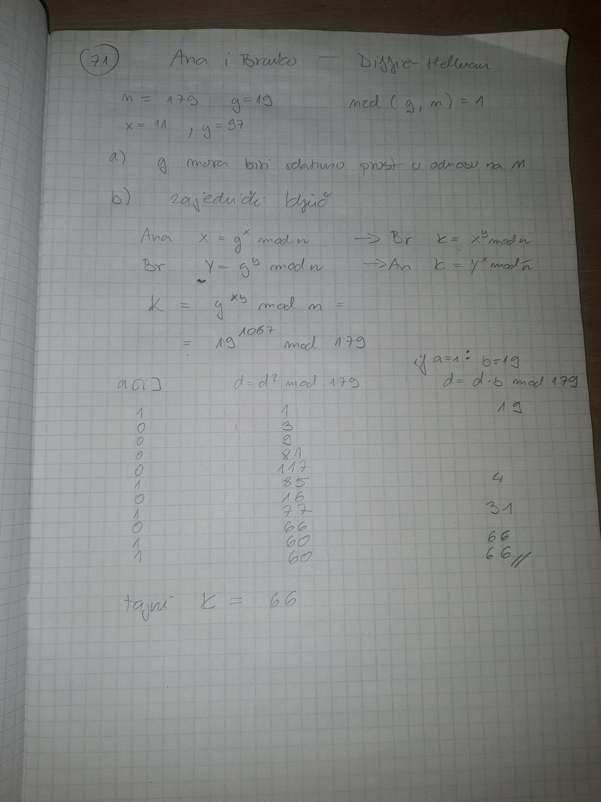
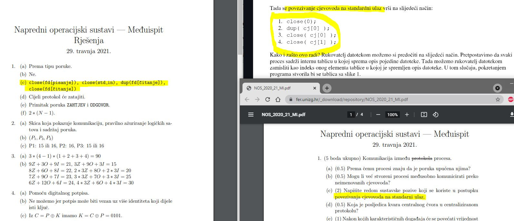

Je li itko rijesavao one stare ispite s materijala? Je li to sve sadrzano u onom Google Doc dokumentu?
Kod računanja dogovorenog ključa kod Diffie Hellmanovog postupka je li postoji neki kraći način od uzastopnog kvadriranja ?
toblerone 
ja radim modularnim potenciranjem, algoritam na 307.str knjige
moze netko napisati kak idu tocno akcije kod povezivanja cjevovoda na std ulaz i izlaz? plsss. gdje pise ista o tome osim u labosu?
naisla sam na kontradiktorne izvore. jedno je cupicev file(gore desno), drugo je MI ove godine. 
dammitimmad mislim da ovaj close(stdin) ili close(cj[1]) nije bitno hocemo li na drugom mjestu ili na kraju izvršiti, ostalo je bitan poredak (nisam siguran hahah)
kako najbrze pronac inverz u Zn?
je li kod crtanja Kerberos protokola bitan redoslijed unutar jedne poruke, tj je li greška ako napišem M2={(C1,N1,K1), Kc} umjesto M2 = {(N1,K1,C1), Kc}, što je napisano na prezi?
neZnamNista ja sam na usmenom pao, jer sam zamjenio poruke u skici na kerberosu, i jer nisam znao nabrojat 4 naredme iz 1. Zadatka.
sto se tice skice on nije trazio koliko se sjecam cijeli sadrzaj poruka nego samo kojim redosljedom idu.
Treba znati i sadrzaj 🙁
Jel te stvarno rusio samo zbog te 2 gluposti?